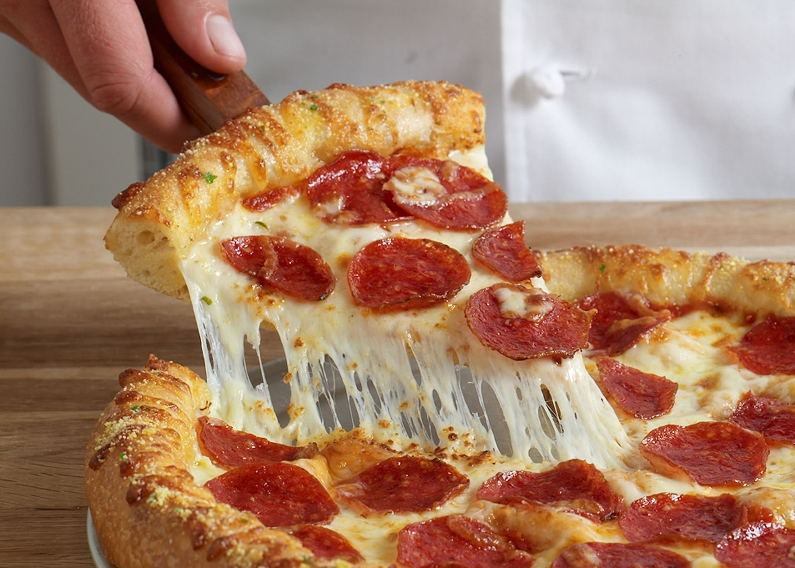

Pizza

Description
Pizza is one of the most popular dishes in the world. Some of the best pizza can be had in places including Italy, New York City, and Chicago.
The base recipe is a simple combination of dough/crust, sauce, and cheese.
There are endless options for customizing a pizza to make it just right for you.
This recipe will show you how to make a simple, yet tasty, pepperoni pizza. Feel free to add additional toppings as you wish.
Ingredients
Crust
- 2 1/2 cups flour
- 1 teaspoon salt
- 1 teaspoon sugar
- 1 tablespoon fast rise yeast
- 1 cup water
- 1 tablespoon oil
Topping
- 1/4 cup tomato sauce
- 1 teaspoon italian seasoning
- 1/2 teaspoon garlic powder
- 1/2 teaspoon salt
- 1/8 teaspoon pepper
- 1 1/2 cups pepperoni slices
- 1 cup shredded mozzarella cheese
- 1 cup shredded monterey jack cheese
- 3 tablespoons grated parmesan cheese
Steps
Crust:
- In a large bowl, mix first 4 ingredients.
- Mix water and oil; add to flour mixture.
- Turn onto floured surface; knead for 2 minutes.
- Place in a greased bowl; turning to grease top.
- Cover and let rise for 20 minutes.
- Punch down; place on 12 in greased pizza pan.
- Pat into a circle.
Topping:
- Mix first 5 ingredients and spread over crust.
- Put a few pepperoni slices on top of sauce.
- Sprinkle with 1/2 the mozzarella; 1/2 the monterey jack, and 1/2 the parmesan.
- Put the rest of the pepperoni on.
- Repeat the cheese layer (step 10).
- Bake at 400 F for 20 minutes or until light brown.
Reference: https://www.food.com/recipe/easy-and-quick-homemade-pizza-22754